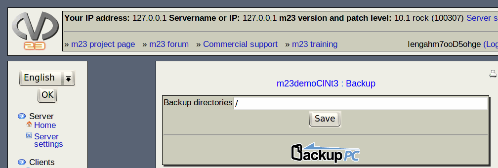

You can select the directories that should be backed up in this dialog. Enter the comma seperated list of the directories in the edit line ''Backup directories'' and click on ''Save'' afterwards.
The backup is done with BackupPC. You can start it with a click on the BackupPC icon. In the BackupPC interface you can access additional backup functions. User name and password are identical to the login data for the m23 webinterface.
root
2018-05-08